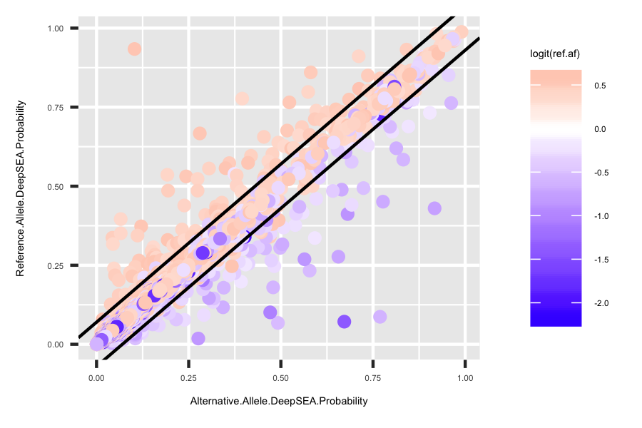
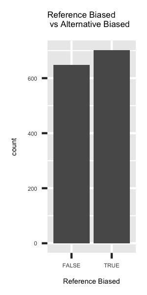

Table S3 of DeepSEA paper lists all the heterozygous sites that has imbalanced DNase DGF signal.
library(bsselectR)
source('my_r.R')
deepsea <- read.table('../data/nmeth.3547-S4.csv', sep = ',', skip = 1, header = T)
deepsea$ref.af <- deepsea$Ref.reads / (deepsea$Ref.reads + deepsea$Alt.reads)cell_list <- as.character(unique(deepsea$Cell.type))
# plots1 <- list()
# plots2 <- list()
# plots3 <- list()
# for(cell in cell_list){
# deepsea.cell <- deepsea[deepsea$Cell.type == cell,]
# deepsea.cell$Log.Odds.Ratio <- logit(deepsea.cell$Reference.Allele.DeepSEA.Probability) - logit(deepsea.cell$Alternative.Allele.DeepSEA.Probability)
# deepsea.cell$logit.raf.predicted <- logit(deepsea.cell$Reference.Allele.DeepSEA.Probability / (deepsea.cell$Reference.Allele.DeepSEA.Probability + deepsea.cell$Alternative.Allele.DeepSEA.Probability))
# deepsea.cell$logit.raf <- logit(deepsea.cell$ref.af)
# p1 <- ggplot(deepsea.cell) + geom_point(aes(x = Alternative.Allele.DeepSEA.Probability, y = Reference.Allele.DeepSEA.Probability, color = logit(ref.af))) + scale_color_gradient2(midpoint=0, low="blue", mid="white", high="red", space ="Lab" ) + geom_abline(intercept = 0.07, slope = 1) + geom_abline(intercept = -0.07, slope = 1) + theme(title = element_text(size=3.5), text = element_text(size=3.5))
# p2 <- ggplot(deepsea.cell) + geom_bar(aes(x = ref.af > 0.5, y = ..count..)) + ggtitle('Reference Biased \n vs Alternative Biased') + xlab('Reference Biased') + theme(title = element_text(size=3.5), text = element_text(size=3.5))
# model.linear = lm(logit.raf ~ 0 + logit.raf.predicted, data = deepsea.cell)
# p3 <- ggplot(deepsea.cell, aes(x = logit.raf.predicted, y = logit.raf)) + geom_point() + geom_smooth(method='lm',formula=y~0+x) + annotate("text", x = 0.6 * min(deepsea.cell$logit.raf.predicted), y = 1 * max(deepsea.cell$logit.raf), label = lm_eqn(model.linear), parse = TRUE, size=1.5) + ggtitle('Observed Reference Allele Frequency vs \n Predicted RAF') + theme(title = element_text(size=3.5), text = element_text(size=3.5))
# plots1 <- ai_deepsea_save_plot('scatter', p1, cell, '../docs/plots', plots1, 'plots', 3, 2)
# plots2 <- ai_deepsea_save_plot('bias_count', p2, cell, '../docs/plots', plots2, 'plots', 1, 2)
# plots3 <- ai_deepsea_save_plot('obs_pred', p3, cell, '../docs/plots', plots3, 'plots', 2, 2)
# }
